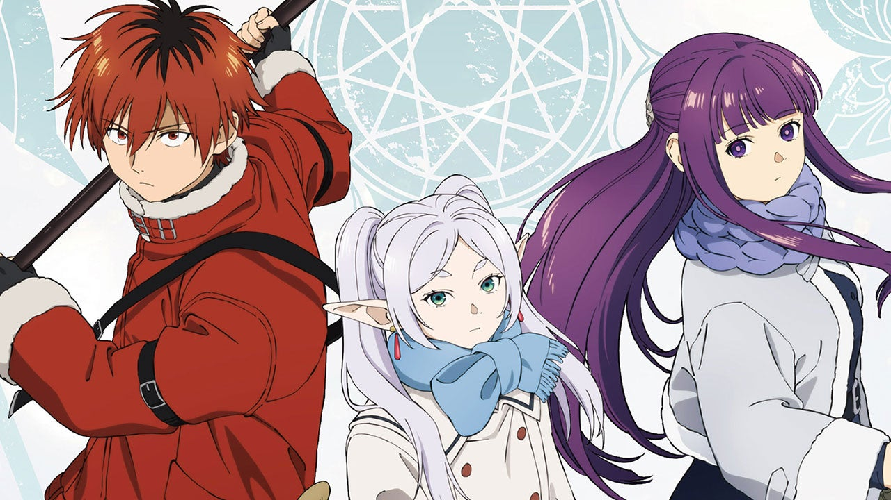
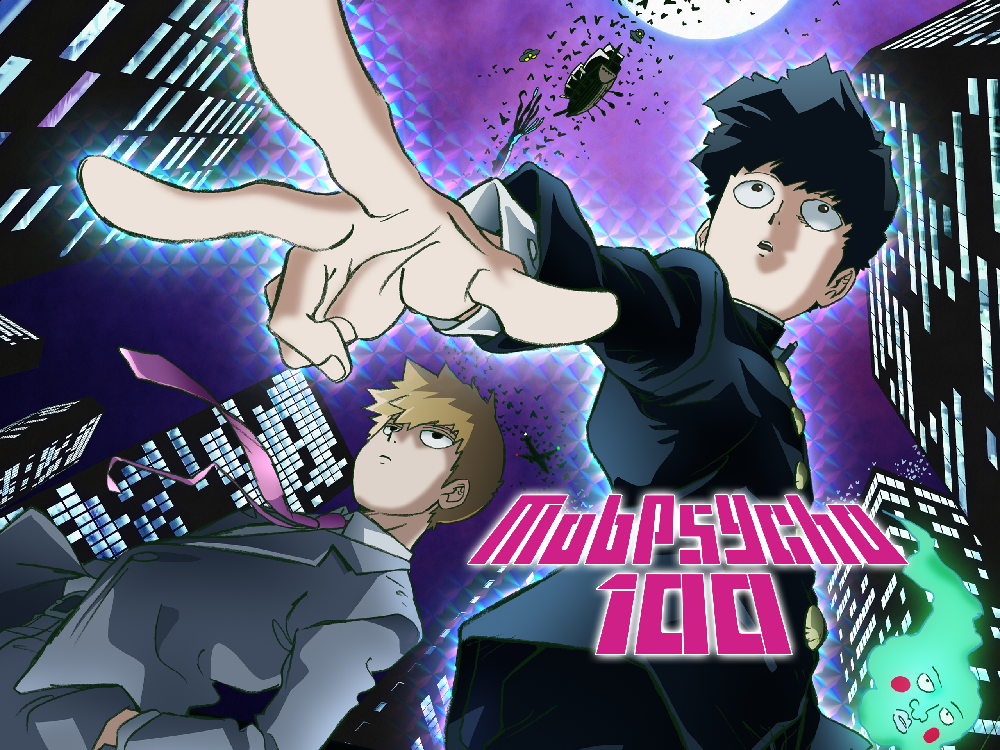
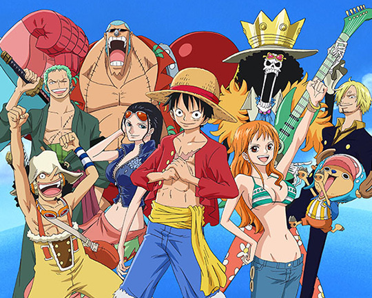

Ians Favorite Anime
Explore some of my favorite anime across different genres. From romance to fantasy stories, each one offers a unique world and unforgettable characters.

Darling in the Franxx
A futuristic romance about connection and sacrifice. Hiro and Zero Two fight to protect humanity while discovering what it means to truly care for someone.

Frieren
A quiet fantasy about time and memory. After the hero's journey ends, Frieren travels the world learning what it truly means to understand humans.

Mob Psycho 100
A psychic middle schooler tries to control his powers while learning confidence and emotional strength. The show mixes hilarious comedy with powerful moments.

One Piece
Follow Monkey D. Luffy and the Straw Hat Pirates as they travel the seas searching for the legendary One Piece treasure.